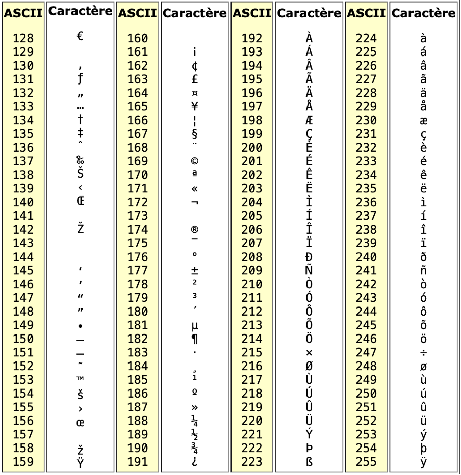
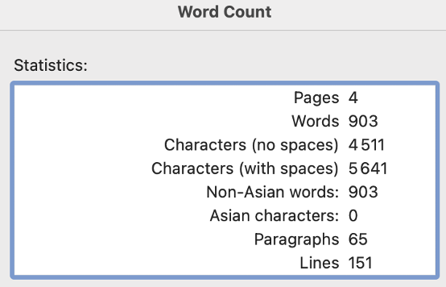
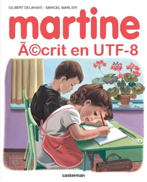
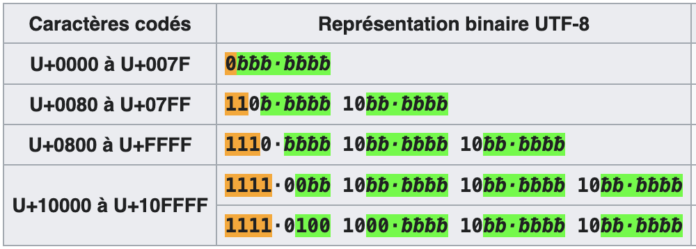
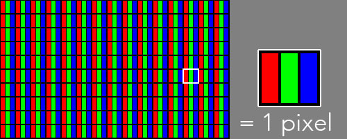

coder les caracteres et couleurs
Codage des caractères
Un texte est une chaine de caractères et de symboles (dont l’espace, virgule…). La représentation du texte dans l’ordinateur suit ce même schéma : c’est le rangement à des emplacements consécutifs de la mémoire des représentations des caractères un à un. Il existe plusieurs normes d’encodage des caractères.
Code ASCII
Une des première normes a été l’ASCII (American Standard Code for Information Interchange), qui est apparue aux états unis, à l’époque où les ordinateurs n’étaient pas connectés en reseau.
table ascii pour les nombres 0-127
Le problème de l’encodage ASCII est qu’il ne permet pas de représenter assez de caractères pour les besoins des différentes langues.
Une autre norme, encore utilisée est l’ASCII étendu, dont les caractères sont encodés sur 8 bits.

table ascii-Latin1 pour les nombres 128-255
Il existe plusieurs tables ascii-étendu, celle présentée ici est celle Latin1, utile pour les caractères du français et autres langues d’europes de l’ouest.
En ASCII étendu: 1 octet par caractère. On peut évaluer la taille d’un fichier: C’est le nombre N caractères, exprimé en octets.

informations sur un fichier textuel (Word)
La principale limitation des jeux de caractères codés sur un octet, comme l’ascii-Latin1, est la nécessité d’utiliser plusieurs jeux de caractères codés pour couvrir plusieurs alphabets.
Attention à la compatibilité avec les documents web:
Les jeux de caractères en un seul octet ne sont pas compatibles avec la norme actuelle, l’utf-8 (voir plus loin).
Le e accent aigû é sera représenté en utf-8 par 16 chiffres binaires, et son affichage en format ASCII donnera é.

ascii ou utf8
Dans un document HTML, on pourra tout de même afficher correctement ces caractères, mais il faudra:
- soit utiliser une entité HTML, c’est à dire une combinaison de symboles connus par le navigateur comme par exemple:
épour la lettreé - soit choisir un encodage UNICODE ou utf-8
Les normes suivantes vont proposer des formats qui vont:
- être compatibles avec l’ASCII 7 bits, pour faire évoluer le web tout en restant retro-compatible avec la plus ancienne et la plus internationale des normes
- permettre l’encodage de TOUS les caractères existants ou à venir
Unicode
Le répertoire Unicode se décline en utf-8, utf-16 et utf-32, qui sont de largeur variable ou fixe (pour utf32) Le code UNICODE permet de représenter tous les caractères spécifiques aux différentes langues.
Cette gigantesque table est divisée en 17 plans (de 0 à 16) de deux octets chacun, soit 65 536 points de code par plan (65 536 x 17 = 1 114 112). Ces plans permettent de désigner facilement des groupes de caractères. Le premier plan, appelé Basic Multinlingual Plane (BMP), ou Plan Multinlingue de Base, regroupe les 65k caractères les plus courants. Les plans 1 à 16 sont appelés plans supplémentaires.
L’inconvenient des encodages à largeur fixe (utf-32) est qu’ils vont générer des fichiers de poids important (poids compté en kilo octets). Bien plus lourd que l’encodage ASCII. Alors que bien souvent, la plupart des caractères utilisés pour un document texte sont ceux de l’alphabet ASCII, avec quelques caractères spéciaux.
Code à largeur variable utf-8 et utf-16
-
Cet encodage utilise l’ASCII pour les caractères dont le point de code est inférieur ou égal à 127.
-
Chaque caractère dont le point de code est supérieur à 127 (0x7F) (caractère non ASCII) se code sur 2 à 4 octets.
La longueur du nombre binaire est alors variable. Un caractère peut nécessiter 8 (ascii), 16 bits, ou plus (jusqu’à 32). Une information dans le code numérique va préciser cette longueur (correspond à un caractère spécial comme le Ã). Cela va permettre d’afficher tous les caractères. Cela génère un fichier dont le poids sera inférieur à l’utf-32.
Pour le système d’exploitation Windows, l’encodage par defaut est l’utf-16. MacOs utilise un encodage utf-8.

image issue de wikipedia utf8
Lien wikipedia
La séquence binaire contient alors un premier code qui indique la longueur de bits à venir. C’est comparable au système utilisé pour les masques de sous-reseau.
0bbbbbbb 1 octet codant 1 à 7 bits
110bbbbb 10bbbbbb 2 octets codant 8 à 11 bits
Ainsi, le caractère é est représenté en utf-8 par la séquence binaire 11000011 10101001. Parmi les chiffres binaires, seuls ceux en gras sont codants pour la valeur numérique associée à ce caractère. Il s’agit donc de 000 1110 1001. C’est la valeur E9 en hexadécimal. (233 en décimal).
Avec un encodage ASCII, le navigateur essaiera d’afficher 2 symboles. Celui de code binaire 1100 0011, qui correspond au Ã, le A majuscule tilde. Et celui de code binaire 1010 1001 affichera le ©, symbole copyright.
Codage des couleurs
Colorer avec une règle CSS
Les valeurs de couleur peuvent être codées de manière numérique en décimal ou bien en hexadécimal. Voici 2 exemples d’expression de la couleur en CSS:
synthèse additive des couleurs
Pour une image en couleur: À chaque pixel on associe 3 couleurs, le rouge, le vert et le bleu. On parle du canal rouge, du canal vert et du canal bleu d’un pixel (système RVB ou RGB en anglais).

credit - photograpix.fr/blog
La valeur de l’intensité lumineuse associée à chaque canal de chaque pixel d’une image est comprise entre 0 et 255 (256 valeurs possibles). On codera donc un pixel à l’aide d’un triplet de valeur (par exemple (247,56,98) en code décimal, ou son équivalent en hexadecimal : (f7,38,62)
Question a: Reproduire et compléter l’image du cercle chromatique, représentant la synthèse additive des couleurs. (placer les termes: Rouge, Vert, Bleu, magenta, cyan, jaune).
Pour la suite, vous avez le choix entre 2 options:
- Soit ouvrir le lien suivant : www.proftnj.com/RGB3.htm
- Soit utiliser le script HTML minimum et modifier la couleur de fond dans la proprieté
background-color: rgd();
Question b: à l’aide du logiciel : Quelle est la couleur donnée par le triplet de valeurs: (247,56,98)?
Question c: Combien de couleurs différentes est-il possible d’obtenir avec ce système RVB ? (combinaison de 3 couleurs, codées chacune sur 256 valeurs,…)
Question d: Pour chacune des couleurs du tableau, indiquer le code couleur RGB décimal correspondant (voir ci-dessous).
Question e: Précisez la particularité des teintes grises au niveau des valeurs RVB/RGB
| code couleur RGB | |
|---|---|